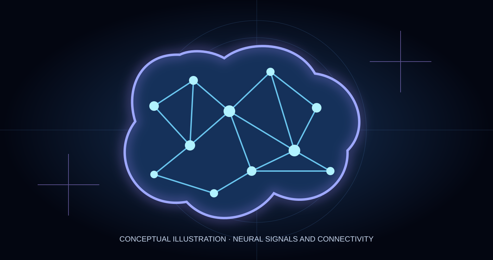

For most of history, the brain was a locked conversation. We could observe its effects, but only faintly hear its language.
Today, some neural signals can be decoded into speech, and certain implanted devices can adjust stimulation in response to brain activity. These are substantial advances. They are not mind reading, and they do not make the human brain freely programmable.
Reading intention, restoring a voice
One of neurotechnology's clearest achievements is giving communication back to people who have lost it. In a 2025 Nature Neuroscience study, researchers used implanted recordings over speech-related cortex and machine learning to generate speech from a participant's attempted speech, updating the system in small 80-millisecond increments. The output was personalized using recordings of her earlier voice.
A separate 2025 Nature study used 256 implanted microelectrodes in a man with amyotrophic lateral sclerosis (ALS) to synthesize intelligible, expressive speech. The participant could change vocal intonation and even sing short melodies. These systems interpret task-related neural activity; they do not extract arbitrary private thoughts. Speech streaming study · Expressive voice study.
In 2026, a Nature Medicine report documented independent, near-daily use of a speech-and-cursor brain–computer interface at home by one person with severe paralysis and ALS. That is a meaningful step beyond demonstrations confined to research labs, while still being evidence from an individual participant rather than proof of broad availability. Read the study.

When the device listens and responds
Reading a neural signal is one kind of interface. Responding to it is another. Deep brain stimulation has long been used for selected movement disorders. Traditional systems deliver stimulation according to programmed settings. Adaptive deep brain stimulation can use measured brain activity to adjust stimulation automatically.
In February 2025, the US Food and Drug Administration approved an adaptive programming feature for Medtronic's deep brain stimulation system for eligible people with Parkinson's disease. This is a genuine example of a medical device participating in a feedback loop: sense, adjust, stimulate, sense again. It is not general-purpose personality editing or a system for rewriting memories. FDA approval record.
A light switch for neurons?
Optogenetics gives certain cells light-responsive proteins so researchers can influence their activity with light. The technique is transformative in experimental neuroscience, but delivering it safely and effectively in humans is a different challenge.
A small 2026 study in the New England Journal of Medicine evaluated optogenetic therapy combined with special goggles for 10 people with advanced vision loss due to retinitis pigmentosa. Seven showed increased light sensitivity, while adverse events and the limited study size underline why more evidence is needed. The treatment targets retinal cells and visual function; it is not a demonstrated method for remotely controlling thoughts or behavior. Read the study.
Evidence compass: Adaptive stimulation for certain Parkinson's symptoms has an FDA-approved clinical use. Implanted speech interfaces have shown important results in small human studies. Optogenetic vision restoration remains investigational. General-purpose thought reading and comprehensive brain rewriting are not established capabilities.
The distance between decoding and understanding
The brain does not present ideas in neat, universal packets. Signals vary across people, contexts and recording methods. Implantation brings surgical and long-term device risks; external recordings trade convenience for less direct access to neural activity. A model trained to decode attempted speech cannot be assumed to decode every memory, feeling or intention.
Even as researchers map language-related activity at finer scales, those observations do not imply that the contents of an entire mind are accessible. Scientific progress in a constrained task is not proof of a universal decoder.
Who holds the pen?
That question is more than a provocative headline. As neurotechnology becomes more capable, practical issues move to the foreground: Who consents to neural data collection? Who stores the recordings? Can a patient audit or stop an adaptive intervention? What happens if an algorithm changes, a manufacturer closes, or a device stops receiving support?
The best near-term promise is not human beings turned into programmable machines. It is restored agency: a person speaking again, moving a cursor independently, or receiving stimulation better matched to symptoms.
For White Rabbit Radar, the frontier is a delicate transition from observing neural activity to interacting with it. The science deserves wonder. The people connected to the devices deserve control.
Primary sources
- Littlejohn et al., Nature Neuroscience (2025), streaming brain-to-voice neuroprosthesis.
- Wairagkar et al., Nature (2025), instantaneous voice synthesis.
- Card et al., Nature Medicine (2026), independent home BCI use.
- US Food and Drug Administration (2025), adaptive DBS approval.
- New England Journal of Medicine (2026), optogenetic vision therapy trial.